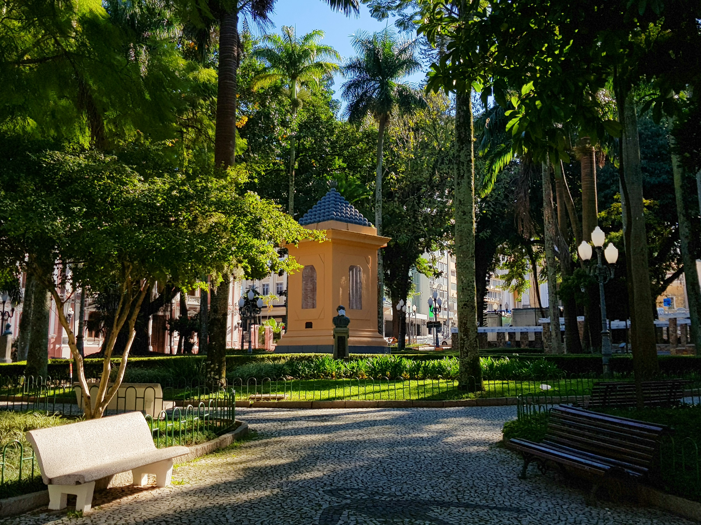
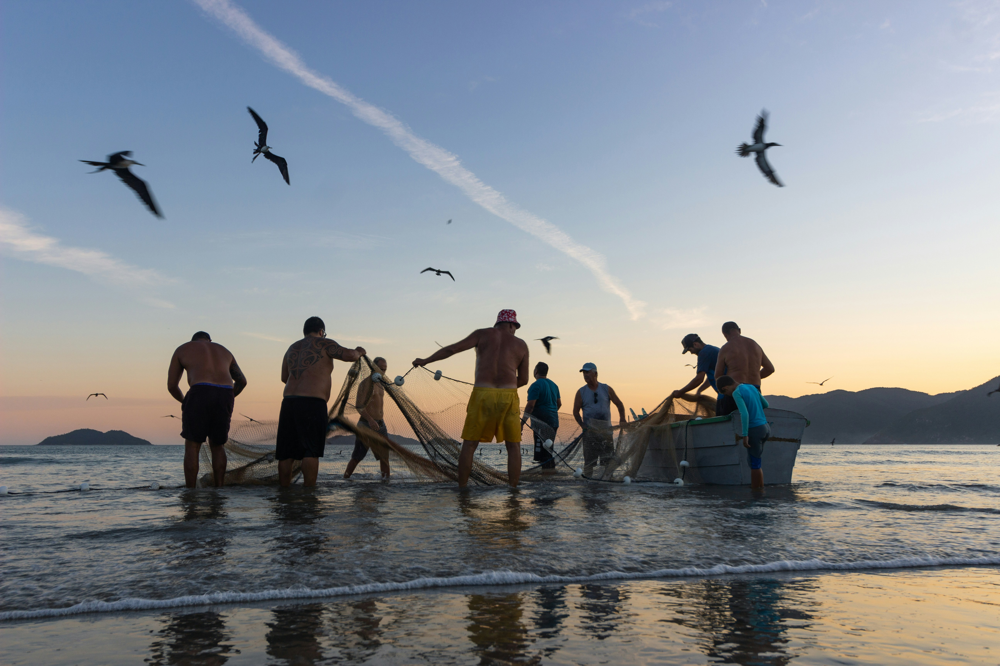
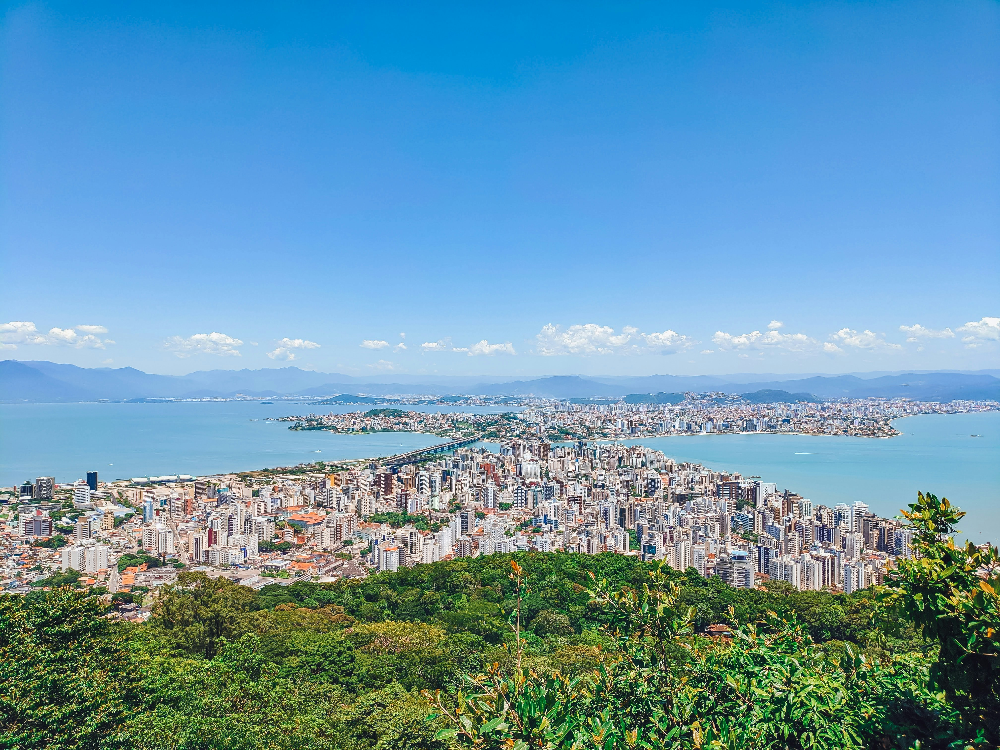

A cultura de Florianópolis é resultado da mistura entre os povos indígenas tupi-guaranis e os colonizadores açorianos, que deixaram fortes tradições na ilha.
Na cultura antiga, destacam-se atividades como a pesca artesanal, a agricultura, a produção de farinha de mandioca e o artesanato, como as rendas de bilro. Também fazem parte desse período as lendas populares, como histórias de bruxas, lobisomens e fantasmas, muito presentes na identidade da cidade.
Já na cultura atual, Florianópolis é uma cidade que combina tradição e modernidade. Além de preservar costumes em comunidades de pescadores, a cidade se desenvolveu no turismo, na tecnologia, na gastronomia e em eventos culturais, mantendo suas belezas naturais como parte importante da identidade local.

As gírias de Florianópolis, conhecidas como "manezês", são um dialeto único, rápido e muito expressivo dos nativos da ilha. Usam termos como:

A região da Grande Florianópolis reúne cidades próximas como São José, Palhoça, Biguaçu e outras, formando um importante centro urbano, econômico e cultural de Santa Catarina.
